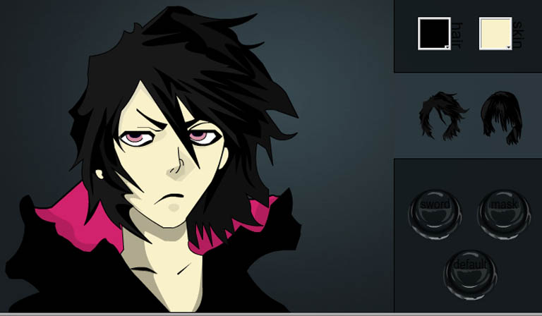

click and grab for zoom!

My first project for Flash, using AS3. Also one of my best at that point of time
Know this character? It's the awesome Tensa Zangetsu from Bleach (which sadly has ended)
You can change it's hair colour, hair style, drawing out the sword and also has those little nifty animations to go along with it.
Will put it up online someday as well..